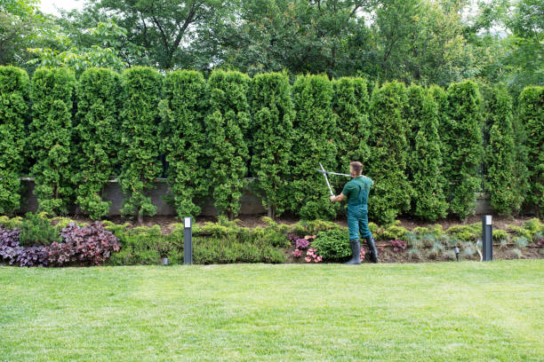
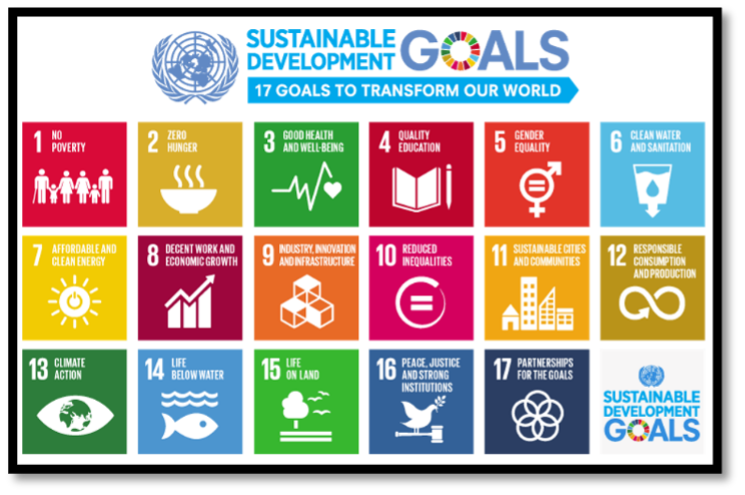
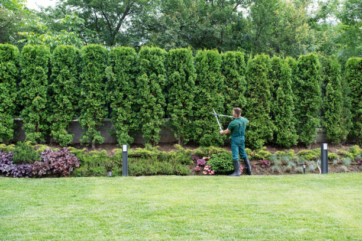
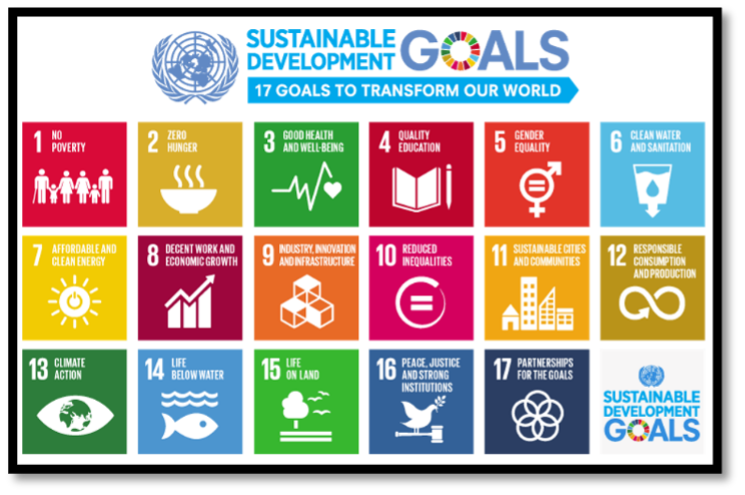

At Green Horizons Landscaping, we strive to make your outdoor dreams accessible and affordable. We offer flexible financing options to help you achieve the landscaping project you've always wanted. Our financing plan includes:
0% Interest for the First 6 Months: We offer no-interest financing for the first six months on approved credit. After the initial 6-month period, standard interest rates will apply.
Flexible Payment Terms: Choose from a variety of payment terms ranging from 6 to 24 months, with monthly installments that fit your budget.
Simple Application Process: Applying for financing is easy! Simply fill out an application online or at our office, and we’ll get back to you with approval in no time.
No Prepayment Penalties: Pay off your balance at any time without facing additional fees or penalties.
Eligibility: Financing options are available to homeowners, businesses, and commercial property owners, subject to credit approval.
If you have any specific delivery requests or concerns, please don’t hesitate to reach out to our team. We aim to make every step of your project as convenient as possible.
We want you to be completely satisfied with your purchase and service. If you’re not happy with any of our products or services, we have a flexible return policy in place:
Product Returns: If you’re not satisfied with a product, you may return it within 30 days of purchase for a full refund or exchange. Products must be unused, undamaged, and in their original packaging. Some exclusions apply, including custom or specially ordered items.
Service Returns: For landscaping services, we offer a satisfaction guarantee. If you are not completely satisfied with the completed work, please contact us within 7 days of the project completion, and we will make the necessary adjustments at no extra cost.
Restocking Fees: A restocking fee may apply for returned items that have been opened or used. This fee is typically 15-20% of the product’s purchase price.
Non-returnable Items: Plants, soil, mulch, and other perishable goods are non-returnable, unless they are defective or damaged at the time of delivery.
How to Return: To initiate a return, please contact our customer service team or visit our office with your purchase receipt. Our team will guide you through the return process and provide you with the necessary instructions.
We want every experience with Green Horizons Landscaping to be positive, and we are committed to resolving any issues promptly.
 


